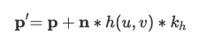

< Back
CS 184: Computer Graphics and Imaging, Spring 2021
Project 4: Cloth Simulator
Nikki Suppala & Anjali Thakrar
Overview
In this project, we implemented a real-time simulation of cloth using a grid of masses and springs.
We built up the data structures that represent the cloth and applied physical constraints on them using Hooke's law.
We also applied numerical integration to simulate the way cloth moves over time. We then implemented collisions with
other objects as well as self-collisions to prevent cloth clipping. Finally, we wrote a few basic GLSL shader programs to
get a glimpse of how things may be accelerated in real-time applications. As extra credit, we implemented a custom shader (part 5) and the wind simulation! It was really interesting
to see how important calculating the correct forces are for realistic cloth and object interactions.
Part 1: Masses and springs
Our wireframe cloth is modeled as a grid of point masses of size num_width_points by num_height_points connected by springs in row-major order.
Each of these masses has a "pinned" vector which determines if it is affected by surrounding spring forces
or if it remains stationary. Horizontal cloths vary along the xz-axis, while vertical cloths vary along the xy-axis.
There are three types of springs that we consider in our simulation: structural, shearing, and bending, and each have edge cases
to consider. For structural springs, constraints exist between a point mass and the point mass to its left as well as the point mass above it.
For shearing springs, constraints exist between a point mass and the point mass to its diagonal upper left as well as the point mass to its diagonal upper right.
For bending springs constraints exist between a point mass and the point mass two away to its left as well as the point mass two above it.
When setting these parameters, we also checked if the point mass is within the cloth's pinned vector. If it was, we set its pinned parameter to true!
Here is what our wireframe looks like with the various constraints enabled. As you can see, bending and structural constraints
appear in a straight grid pattern while the shearing constrains appear in a diagonal grid pattern.
|
Shearing, bending, and structural constraints enabled.
|
Bending and structural constraints only.
|
|
Shearing constraints only.
|
The main debugging issue we had with this section is making sure we handled the edge cases correctly for each
spring type when building the grid. We just manually looked over each case to make sure we inputted into the point_mass
vector at the correct index.
Part 2: Simulation via numerical integration
To implement the simulation, we began by iterating over every point mass and computing the total force acting on each mass, which is calculated using the cumulative sum of all forces acting on the mass, where force = mass * acceleration. We then modeled the spring-mass system. In order to do this, we created the two endpoints of every spring (given that a spring existed at that point based on our cloth mesh) and set the value of the spring force. This spring force is calculated using the ks * delta(x) equation, where the force the spring pushes back with varies depending on the spring constant (ks) and the distance it is stretch (delta x). Just as with the point masses, this spring force is a cumulative sum of all forces acting on the given spring.
After setting up our mesh and its components, we use verlet integration to compute new point mass positions for each point after a certain time step. In order to do this, we implemented the following equation:
where x(t−dt) is the position from the last time step, x(t) is the position from the current time step, d is the damping factor, and v(t) and a(t) are the velocity and acceleration of the point mass, respectively. In the equation, we are simulating a simple kinematic equation. The interesting part is the damping, which essentially helps account for any external forces that are unaccounted for. That is, it helps with simulating energy loss from factors such as heat loss, friction, air resistance, etc.
Finally, we implemented constrain position updates, which essentially acted as a sanity check to make sure our springs didn’t stretch further than they reasonably would be able to in real life. We were able to model this by saying that the spring must not stretch further than 110% of the rest length (ie. 10% longer than the rest length). If both ends were pinned, we wouldn’t change anything; if one end was pinned, the other end would perform all changes / contractions; if neither end was pinned, each endpoint would move inwards 50% of the error (length away from our constraint of 110% of the rest length).
The spring constant ks is integral in force calculations for the force, as it dictates the movement of the model’s
materials and objects. By making the spring constant higher, the cloth straightens out much more — this is
because it now requires more force on the cloth / springs making up the cloth in order for it to be affected.
Similarly, when the ks spring constant value is low, it has the opposite effect where the cloth bends more than
it did in the intermediate case — this is because now the springs require less movement in order to bend and
be pulled.
For all of the images below, all constraints are left constant (to the default) other than ks.
Constants: normal = 1, height = 0.01, density = 15 g/cm^2, damping = 0.2%
|
ks = 500 N/m (low)
|
ks = 5,000 N/m (default)
|
|
ks = 100,000 N/m (high)
|
Playing with some of the other parameters, we found that the lower density makes it such that there is less
total mass and as such, it is less weighted down. When the density is higher, there is more sagging and the force of gravity
has a greater effect on the cloth because there is a higher weight per unit area.
Constants: normal = 1, height = 0.01, ks = 5,000 N/m, damping = 0.2%
|
density = 1 g/cm^2 (low)
|
density = 15 g/cm^2 (default)
|
|
density = 100 g/cm^2 (high)
|
For damping, when we made it really small (0), it kept oscillating back and forth, folding in on itself along
the z axis. When we made the damping value high, it pretty much immediately fell down and settled in a shape.
When it was at the default value, it was somewhere in the middle, where it took some time to get settled, but
it did ultimately settle into a position.
Constants: normal = 1, height = 0.01, density = 15 g/cm^2, ks = 5,000 N/m
|
damping = 0% (low)
|
damping = 0% (low)
|
 damping = ~52.8% (medium)
damping = ~52.8% (medium)
|
|
damping = 100% (high)
|
Shaded cloth from pinned4.json:
One noticeable bug we had at the beginning was that we weren't computing our constraint position updates
correctly. That is, we were calculating the new, amended position value incorrectly and that was leading
to some unwanted extra stretching of the cloth. We also forgot that forces were cumulative, so we had initially
forgotten to sum all forces acting on a point mass for our calculations.
Part 3: Handling collisions with other objects
To handle collisions with other objects (i.e. the plane and the sphere), we essentially calculate
where the cloth crossed the surface boundary of the primitive and "bounce" the point masses back to the surface.
For the sphere, we calculate if a point mass is inside the sphere by checking if it less than the sphere's radius
away from the center of the sphere. We then compute where the point mass should have intersected the sphere by
extending the path between its 'position' and the sphere's origin to the sphere's surface, which ends up being
(pm.position) + ((origin - pm.position).unit() * (dist - radius)). The correction vector is then
that tangent point minus the point mass's last position. We update the point mass's current position
by adding the correction vector scaled down by (1 - friction) to the last position. We do this calculation for every
point mass against every collision object.
Below you can see different images of the cloth at its final resting state on the sphere using different
ks values. You can see that as the ks value increases, the forces of the springs of the cloth are stronger, and the
cloth becomes more taut.
|
ks = 500.
|
ks = 5,000.
|
|
ks = 50,000.
|
For the plane intersection, we calculate if a point mass crosses the plane or touches it directly
by checking if dot(pm.last_position, normal) * dot(pm.position, normal) <= 0.
Then, we calculate where the tangent point, which is at
pm.last_position + (-dot(pm.last_position, normal) / dot(u, normal)) * ((pm.position - pm.last_position).unit()).
The correction vector is tan_point + (SURFACE_OFFSET * normal) - pm.last_position, which is
again added to the point mass's last position and scaled down by friction to correct its current position.
We do this calculation for every point mass against every collision object.
Below you can see the cloth lying at rest on the plane.
After implementing these functions, we edited the simulate function in cloth.cpp such that our collide function for every given collision object was called on every point mass!
The main debugging issue we ran into for this part was calculating the correction vectors correctly. With the help
of TAs during office hours and going through iterations of drawing the vector diagrams, we got to right result.
Part 4: Handling self-collisions
To handle self-collisions, we implemented a method using spatial hashing. At each time step, we build a hash table that maps a unique float value to a
vector, which is stored as map in the Cloth struct. The float uniquely represents a 3D box volume
in the scene and the vector contains all of the point masses that are in that 3D box volume.
Once the map is built, we simply loop through the point masses, look up the point masses that it shares the same 3D volume with
in the hash table, and then apply a repulsive collision force if any pair of point masses are within 2*thickness distance of each other.
Our hash values are calculated by coming up with 3 integers using width and height of the cloth mesh and the xyz values of the position we're looking at, and using 2 large primes P1 and P2 to
compute (x * P1 + y) * P2 + z, where x = x_position / computed_width_constant, y = y_position / computed_height_constant, z = z_position / max(computed_width_constant, computed_height_constant). We calculate the correction of a point mass by adding up (((pm.position - (*candidates)[i]->position).norm()) - (2.0 * thickness)) * ((*candidates)[i]->position - pm.position).unit()
for each of its collisions and then taking the average by diving by the number of collisions. Finally, we scale down
the average correction by simulation_steps and add it to the point mass's current position.
Below you can see a cloth falling onto itself. Notice how the cloth does not clip through or behave strangely as it folds.
|
Early in the simulation.
|
Initial self-collision and folding.
|
|
Cloth laying at rest.
|
Below is few photos of the cloth at resting state at varying denisty values. The ks value was kept constant at 5,000 N/m.
You can see that as the density increases, the cloth folds onto itself more. The cloth is more closely held together as it falls and
spreads out less.
|
d = 15 g/cm^2.
|
d = 50 g/cm^2.
|
|
d = 100 g/cm^2.
|
Below is few photos of the cloth at resting state at varying ks values. The density value was kept constant at 15 g/cm^2.
You can see that as the ks value increases, the cloth springs "repel" external forces more are the force between the point masses
gets stronger. The effect is that the cloth is more spread and does not fold as tightly.
 ks = 500 N/m.
ks = 500 N/m.
|
 ks = 5,000 N/m.
ks = 5,000 N/m.
|
|
ks = 20,000 N/m.
|
The main debugging issue we faced with this part was finding a way to get a unique hash value. We ended up using
a source online (commented in the code) to find a good formula. We also realized we calculated our z value
incorrectly for vertical cloths, which a TA helped us figure out.
Part 5: Shaders
Task 5 was interesting because it was in OpenGL -- something we had never used before!
Shader programs in GLSL offer a computationally inexepensive alternative to rendering realistic material appearances
without exhaustive ray tracing on a CPU. This is because they are programs that run in parallel on GPU,
executing sections of the graphics pipeline, taking in an input, and outputing a single 4 dimensional vector.
Shader programs are built in two parts: a vertex shader and a fragment shader. A vertex shader assigns vertex attributes
in the scene and transforms the scene to normalized device coordinates. They generally apply transforms to vertices,
modifying their geometric properties like position and normal vectors, writing the final position of the vertex to
gl_Position, in addition to writing varyings for use in the fragment shader. A fragment shader assigns an RGB-alpha vector
for each pixel in the display. They generally take in geometric attributes of the fragment calculated by the
vertex shader to compute and write a color into out_color. The two shaders work together as data contained in the vertex attributes
is manipulated in the fragment shader to produce different material effects.
Blinn-Phong Shading
One particular shader we implemented utilized the Blinn-Phong Shading model, which consists of 3 types of light: ambient, diffuse, and specular.
Ambient shading does not depend on anything and simply adds constant color to account for disregarded illumination
and fill in black shadows. Diffuse shading results in a matte appearance, is independent of view direction as light is scattered
uniformly in all directions, and we can use Lambert's cosine law to determine how much light hits the surface.
Specular shading create the bright highlights that one would see on a glossy surface, mimicking the reflection of light sources, and it depends on the view direction.
This builds up to the equation for Blinn-Phong shading which is:
|
The first term in this addition corresponds to ambient lighting. The second is diffuse lighting. The third is specular reflections.
The ambient coefficient (k_a), diffuse coefficient (k_d), specular coefficient (k_s), ambient intensity (I_a), and the reflection lobe determiner (p)
are constants we simply picked. The distance from the light source (r) is length(u_light_pos - v_position.xyz). The direction toward
the light source (l) is u_light_pos - v_position.xyz. The bisector of the vertex and l (h) is (u_light_pos + v_position.xyz) / length(u_light_pos + v_position.xyz).
The images below demonstrate each of the shading types on their own and together.
|
Ambient shading.
|
 Diffuse shading.
Diffuse shading.
|
 Specular shading.
Specular shading.
|
Complete Blinn-Phong shading.
|
Texture Mapping
We also implemented a texture mapping shader. We sample from the u_texture_1 uniform using the built-in function
texture(sampler2D tex, vec2 uv), which samples from a texture tex at the texture space coordinate uv. That sample is then
output as the fragment's color. Below is an image of a custom shader of a brick texture with a reddish hue.
|
Displacement and Bump Mapping
In bump mapping, we modify the normal vectors of an object so that the fragment shader gives the illusion of detail
on an object. We start by calculating the tangent-bitangent-normal (TBN) matrix, which transforms a vector from object space to model space.
TBN = [t b n] where t is the tangent vector from the mesh geometry, n is the original model-space normal vector, and b is
t x n. Using the height map, we then compute the local space normal n_o, which is (-dU, -dV, 1) where dU and dV are defined as:
|
k_h is a height scaling factor and k_n is a normal scaling factor. Our displaced model space normal is then TBN * n_o.
You can see the resulting effect below with h = 1.5:
In displacement mapping, we modify the position of vertices to reflect the height map in addition to modifying
the normals to be consistent with the new geometry. We then displace the vertex positions in the direction of the
original model space vertex normal using the formula:

You can see the resulting effect below with n = 100 and h = 0.3:
We can compare the two approaches and resulting renders by seeing how the two shaders react to the sphere by
changing the sphere mesh's coarseness. See the following images with different -o and -a values.
|
Sphere, Bump, -o 16 -a 16
|
Cloth, Bump, -o 16 -a 16
|
Sphere, Displacement, -o 16 -a 16
|
Cloth, Displacement, -o 16 -a 16
|
|
Sphere, Bump, -o 128 -a 128
|
Cloth, Bump, -o 128 -a 128
|
Sphere, Displacement, -o 128 -a 128
|
Cloth, Displacement, -o 128 -a 128
|
In the first row of images, bump mapping seems to perform better than displacement mapping for this low sampling rate of 16x16.
Bump mapping provides a smooth surface; whereas, displacement mapping has inaccurate shape deformations. These bumpy
deformations occur because the fragment shader is interpolating the height over the sphere from a relatively small
number of samples compared to the high frequency of the texture. In contrast, the second row of images is of 128x128 samples
which is a high enough sampling rate for the surface displacements to match the high frequency of the texture.
We can now see that displacement mapping accurately portrays both the shading and details of the texture.
Environment-mapped Reflections
Finally, we implemented a shader that modeled a mirror material. We approximated the incoming radiance sample
using an environment map by enclosing our scene inside of an infinitely-large room with the environment's appearance painted on the inside.
The environment map sampling was done without shadow rays. The first step of the approximation was to
use the camera's position and the fragment's position to compute the outgoing eye-ray. Then, we reflected
the eye-ray across the surface normal to get the incoming direction. Finally, we sample the environment map for that
incoming direction.
The result looks like this:
The majority of our debugging was centered around learning the OpenGL syntax. It took some time to find the functions, parse through the documentation, and
understand the errors themselves (we found that even a single missing semicolons resulted in many unrelated errors, which made
them hard to track down initially). But we got the hang of it pretty quickly, and our work on this section led to some pretty cool results!
Extra credit: Custom Shader
We thought the displacement shader was very interesting, so for the custom shader, we built off of the code form that section and layered it over our Blinn-Phong shading.
In order to change up the shader, we changed the return value of teh height function to be length(texture(u_texture_3, texture(u_texture_4, uv).xy).xyz).
This uses two different textures (3 and 4) and takes the texture of an already processed texture, which serves to compound it. We also made the opacity 0.75 rather than 1.0 to give it a bit of a tulle effect!
This was a really cool shader to play around with because we were able to see how the different textures, opacities,
and combinations of texture sampling contributed to the final cloth and sphere meshes and collisions.
Part 6: Extra credit
Wind Simulation
When looking for documentation and resources online, we primarily referenced these two documents:
Dissertation by Navneeth Nagaraj, titled "Implementation of Cloth Simulation that can be Used in Games and Animation": https://www.scss.tcd.ie/publications/theses/diss/2016/TCD-SCSS-DISSERTATION-2016-054.pdf
Stanford graphics course notes: https://graphics.stanford.edu/~mdfisher/cloth.html
We decided that it made most sense to implement the wind force and air resistance when computing the cloth's verlet integration.
Combining the methodologies found in both of the resources linked above, we calculated the force of wind to be (sin(x * y * delta_t), 1.2 * cos(5.0 * z * delta_t), 1.5 * (sin(cos(5.0 * x * y * z)) + (y/1.5))) where x, y, and z are the positions of the current point masses.
we then created the air resistance vector by multiplying 50% of the acceleration by the square of the velocity of the point mass. Finally, in order to
make this force actually affect the mesh in the final simulation, we added the forces of the wind and the the air resistance (multiplied by the square of the delta time and -0.7) to the position, which
corresponds to a change in distance due to the force. This was a really interesting feature to implement because wind in a spatially-varying force, meaning it's different
based on where in the cloth you're looking at. In this case, it was largely dependent on the x, y, and z locations of the
given point mass! It was also quite clear that we were using sine and cosine functions to model the varying force in different directions,
because these "waves" can be seen traversing through the cloths in all 3 dimensions in the simulation. The debugging was mostly
trial and error -- we were able to get the forces added fairly quickly, and it ultimately was just a matter of tuning how we actually wanted them to look (using coefficients as weights).
Wind simulation
The wind simulation is currently implemented on lines 172-182, feel free to toggle line 182 to play around with this effect on the cloth!
Collaboration
For this project, we continued to work as we have on the previous projects -- through VSCode live share! We started early to accommodate for both of
our busy schedules, and found time to meet most evening to get a chunk of the work done, and so that we would have time to
go to office hours if need be. Overall, we collaborated very closely and worked on every section together, which
made for some very productive debugging and work sessions, and gave us the ability to deeply understand and discuss the content!